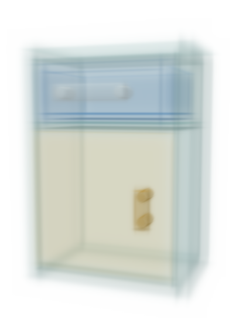

2.5 Gaussians: rendering
B. Rendering
Choose a camera and draw the same Gaussian cabinet from that viewpoint. The videos follow the 3D blobs onto a flat image; the sliders show how opacity affects the result.
2.5.1 Gaussian rendering: project and blend
Start with the fixed 3D blobs introduced in Section 2.3.1. A camera determines where their colors land in the picture.
How do the 3D blobs become an image?
A Gaussian renderer projects each 3D blob onto the flat image as a soft oval mark. Where marks overlap, it combines their colors, taking account of which blob is nearer the camera. Placing and blending these projected marks is called splatting. Original 3D Gaussian Splatting (3DGS) project.
Watch the 3D setup become a 2D view
The image plane is a flat rectangle where we draw the camera’s picture. In this diagram it sits in front of the camera. Seen from its edge, that rectangle looks like a line; the image still has width and height.
First, we rotate our view of the diagram to see the image plane from the side and front. In the last part, the camera itself moves while the two 3D blobs stay in place. The picture on the right shows exactly what that camera renders.
The outlined shapes help us see the blobs in 3D. Their rendered marks have soft edges because a Gaussian fades outward.
In the last part, watch the gold mark move behind the blue one, then separate again. The 3D blobs have not moved: the camera now sees them along different lines of sight. Their marks are calculated again for each new camera position. This is how the same 3D scene can produce different 2D pictures.
For implementation details, see how gsplat uses the camera and Gaussian shapes to calculate these images.
Now try a whole cabinet
The same idea works with many blobs. Here, blue blobs form the drawer, gold blobs form the door, and teal blobs form the cabinet body. First we enlarge one drawer blob; then we follow the cabinet’s colors onto the image plane and move the camera.
The outlined shapes make the individual blobs visible. The camera picture blends their soft marks together. The cabinet stays still throughout; only the camera moves. This is a deliberately simple teaching model we built, not a reconstruction trained from photographs.
What does changing opacity actually change?
Several blobs can cover the same spot in the camera’s picture. We need one final color at that spot. Opacity decides how strongly the front blob contributes and how much of the color behind it can still show through.
In the cabinet video, overlapping blue marks combine to form the drawer’s picture. Opacity is part of that blending step. It does not add paint or a texture to a mesh.
Try a blue mark in front of a gold mark. Move the slider and watch how much gold remains visible. The gold stays at 80% opacity; only the blue changes.
25% blue + 60% gold + 15% white background.
Blue uses 25% of the pixel’s weight. Gold gets 80% of the remaining 75%: 60%. The background gets the last 15%.
Low blue opacity: more gold shows through. High blue opacity: the picture becomes mostly blue at the marked spot. Neither blob has moved; we have changed how their colors combine.
The calculation follows one pixel. Across the whole picture, each mark fades toward its edges, and many marks overlap to make the cabinet’s surfaces look continuous. The 3DGS paper gives the projection and blending equations.
Change opacity on the whole cabinet
Now change the opacity of every blob in the cabinet. The camera, colors, positions, and sizes stay the same. Compare your setting on the right with the fixed picture on the left.


At 5%, the faint marks let more of the rear surfaces and white background show through.
Many blobs overlap. Their colors build up, so 25% per blob does not mean that the whole cabinet is only 25% opaque. At 0%, none of the blobs contributes color and only the white background remains.